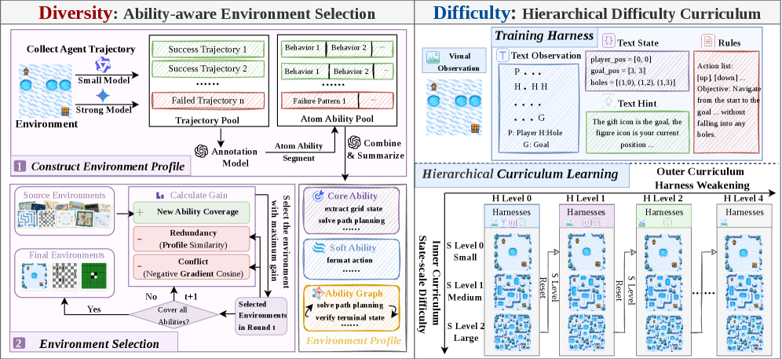
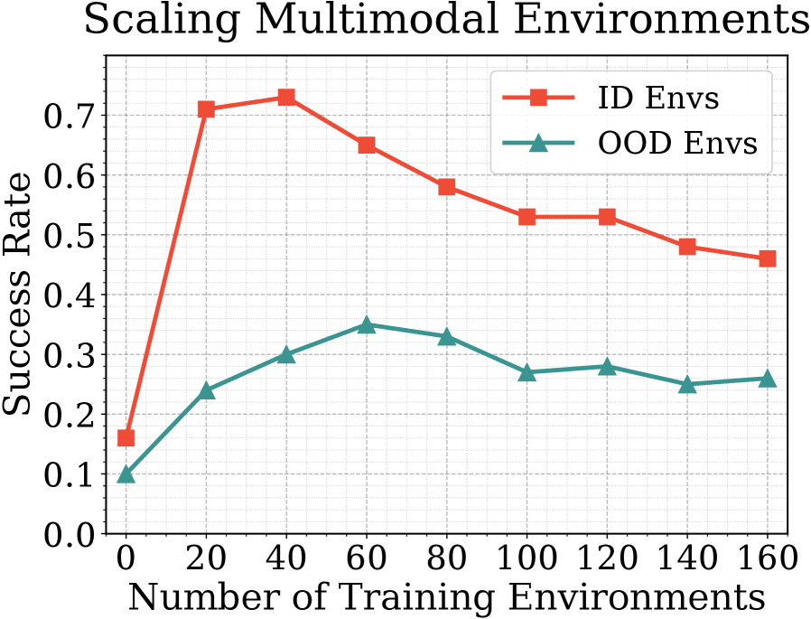

Beyond Simply Environment Scaling: Ability-Aware Selection and Hierarchical Difficulty Curricula for Multimodal Agents
TL;DR
- "Beyond Simply Environment Scaling" (arXiv 2608.03571; Kejian Zhu, Zhuoran Jin, Dongqi Huang, Hongbang Yuan, Yupu Hao, Kang Liu, Jun Zhao — CASIA/UCAS) shows on a 200-environment multimodal pool that naively adding environment types at fixed compute does not monotonically help and can hurt — multimodal mixed training drops 10.7% vs. single-environment training, against only 1.3% for text-symbolic versions of the same tasks, with visibly more polarized cross-environment gradient conflicts.
- Two fixes: AES (Ability-aware Environment Selection) profiles each environment by the atomic abilities agents actually exercise in trajectories (GPT-5-segmented, aggregated into 72 core meta-abilities), then greedily selects a subset maximizing new ability coverage minus redundancy and gradient conflict — 30 selected environments beat training on all 200. HDC (Hierarchical Difficulty Curriculum) targets the two measured multimodal bottlenecks (visual state extraction, world modeling) with an outer curriculum that weakens textual harnesses (H0→H4) and an inner curriculum over state scale.
- On Qwen3-VL-4B/8B, AES+HDC yields a 143.2% average relative gain over the base model across ID/OOD environments (vs. 43.4% for all 200 envs, ~44.6% for random-30); ablations show conflict control is the load-bearing part of AES (removing it collapses OOD gain from 40.3% to 2.8%) and the two HDC axes are complementary (11.5% scale-only, 18.1% harness-only, 27.7% both).
Why this matters
The field is racing to scale agent-training environments the way it scaled pretraining corpora — build thousands, train on everything. This paper is a well-controlled "data curation matters" result for the environment era: at fixed compute, which environments and in what order dominates how many. Two ideas travel beyond multimodal agents. First, measuring environment diversity by induced abilities (what agents actually do in trajectories) rather than by task-description embeddings is the environment-space analogue of moving from surface dedup to skill-aware data selection. Second, treating the harness as an annealable scaffold — start training with rich textual assists, then progressively remove them — is a genuinely new curriculum axis, and it inverts how this tracker usually encounters harnesses (as capabilities to exploit, not crutches to withdraw). For anyone building environment pools or RL curricula for agents, the negative result alone (more env types ≠ better, worse in multimodal) is worth the read.
The core idea
Environment distributions should be evaluated on two dimensions: diversity (broad ability coverage, low redundancy, low optimization conflict) and difficulty structure (a progression the agent can actually climb). For diversity, each environment \(e\) gets a meta-ability profile \(P_e\) built from 40 trajectories (half Qwen3-VL-4B, half Gemini-3-Flash, so both failures and successes appear), segmented by GPT-5 into atomic abilities and aggregated into an ability graph with frequencies; abilities are split into core (stable, task-critical) and soft. AES then selects greedily. The scoring pieces (exact LaTeX from the paper):
where \(C(e)\) is \(e\)'s weighted ability coverage set, \(w_a\) the weight of ability \(a\), \(\mathrm{sim}\) a weighted profile similarity, and \(g_e\) the training gradient of environment \(e\) (negative cosine similarity = update directions in conflict). Selection adds the max-gain environment until all core abilities are covered — here, 30 of 200 environments reach full coverage of the 72 core meta-abilities.

Figure 2 from the paper: the full pipeline for evaluating and designing environment distributions.How it works
Why difficulty needs a multimodal-specific axis. Manual error analysis of 200 Qwen3-VL-4B failure trajectories shows the bottlenecks are visual state extraction and world modeling — not the state-scale knobs (grid size etc.) that text-era curricula tune. So the authors define four textual harnesses — text observations, text states, text hints, rule descriptions — that scaffold exactly these bottlenecks (with full harness, single-turn success more than doubles: 13.5→31.7 avg with text states). Harness levels \(H_0\) (all scaffolds) through \(H_4\) (raw pixels + task description only) form the outer curriculum.
Smoothed sampling, per-environment state. Each environment keeps its own harness frontier \(r_e\) and scale window \([\ell_e, u_e]\). Harness levels are sampled from a distribution that puts mass \(p_{\mathrm{cur}}\) on the frontier and spreads the rest over earlier (easier) levels with exponential decay (exact form from the paper):
which avoids abrupt distribution shifts and mitigates forgetting; scale is sampled uniformly from a sliding window \(s\sim\mathrm{Uniform}(\{\ell_e,\ldots,u_e\})\) with \(\ell_e=\max(0,u_e-\Delta d)\).
# Algorithm 1: Hierarchical Difficulty Curriculum (from the paper)
Input: training envs E_train; harness distribution D_e;
scale range [l_e, u*_e]; thresholds tau_scale, tau_harness
Init: r_e = 0 (full harness), u_e = l_e for each e
for each training step:
sample environment e ~ E_train
sample harness level h ~ D_e(h | r_e) # frontier + easier levels
sample scale level s ~ Uniform({l_e..u_e})
generate concrete instance (e, h, s); update policy with RL
estimate recent performance p_e at scale u_e
if p_e > tau_scale: # inner curriculum advance
u_e <- min(u_e + 1, u*_e)
if u_e == u*_e and p_e > tau_harness: # outer curriculum advance
r_e <- r_e + 1 # weaken the harness
u_e <- l_e # restart scale progression
Each environment progresses independently — no global difficulty schedule.
Results
Main experiments: Qwen3-VL-4B/8B-Instruct, RL at a fixed compute budget, evaluated on ID environments, held-out OOD environments, and general benchmarks (MathVision, MMMU, MMStar).
- Naive scaling fails: performance fluctuates and sometimes degrades as environment-type count grows at fixed compute (their Figure 3, below); mixed training costs −10.7% in multimodal vs. −1.3% in text-symbolic versions of the same logic, and gradient cosine similarities are visibly more polarized (including strongly negative pairs) in the multimodal versions.

Figure 3 from the paper: more multimodal environment types is not reliably better.- AES (30 envs) beats All-200 and Random-30: averaged over ID/OOD and both model scales, AES gets a 95.6% relative gain over base vs. 43.4% (all 200) and 44.6% (random 30 balanced over human categories). Selection transfers: profiles/gradients computed with 4B still give the 8B model +144.3% ID / +47.1% OOD.
- AES+HDC is the headline: 143.2% average relative gain; e.g. 4B ID single-turn 15.7→45.0, OOD multi-turn 9.5→16.8. General multimodal benchmarks are roughly preserved (±1.5% relative), i.e. agentic training didn't tax MMMU/MathVision.
- Ablations localize the value: dropping AES's redundancy term cuts OOD relative gain 40.3%→25.3%; dropping conflict control collapses it to 2.8% — gradient-conflict filtering, the most expensive component, is also the most necessary. For HDC: scale-only +11.5%, harness-only +18.1%, both +27.7% (on top of AES).
How it connects
- Echoverse: Deep Evolving Environments for Computer-Use Agents (tracked item) — Echoverse pushes environment generation (depth and evolution); this paper is the complementary claim that generation without distribution design wastes compute, and AES-style ability profiling is a natural selection layer over any generated pool.
- OSGym: Scalable OS Infrastructure for Computer-Use Agents (tracked item) — OSGym is exactly the "scale the pool" infrastructure this paper stress-tests. The −10.7% multimodal mixed-training drop and gradient-conflict analysis are the failure modes an OSGym-scale pool should screen for before training on everything.
- EvoHarness-RL: Training Harness Usage as a Capability — a sharp mirror image. EvoHarness-RL treats the harness as a capability target (agents learn to exploit richer harnesses); HDC treats it as scaffolding to anneal away (agents graduate from harness assistance to raw pixels). Both establish the harness as a first-class training variable rather than fixed plumbing — worth a note on when each framing applies: deployment-time harnesses you keep, training-time harnesses you remove.
Critical take
The two negative results (non-monotonic scaling; multimodal negative transfer with matched task logic) are the most defensible contributions — clean controls, useful numbers. The positive results are real but the headline needs deflating: "143.2% average relative gain" is an average of relative gains over a very weak base model (e.g., 13.1 ST → 45.0 is genuinely large, but relative-gain averaging over-weights the near-zero baselines, and OOD absolute numbers remain modest — 22.1 ST / 16.8 MT at 4B). Everything is Qwen3-VL; transfer of the AES selection is shown 4B→8B within the family only, and the ability profiles depend on GPT-5 segmentation with manual filtering — a subjective, hard-to-reproduce pipeline step (prompts are in the appendix, at least). Gradient-based conflict scores require per-environment training gradients offline, which the authors admit is costly; and since fixed compute means some of the 200-env runs may be undertrained, part of the "selection beats scaling" effect could be a compute-dilution artifact — selection concentrates compute per environment as well as choosing better ones. The paper acknowledges the budget confound in its limitations. I'd still bet the qualitative claims survive: conflict-aware selection and harness annealing both have sensible mechanisms behind their numbers.
If you remember three things
- At fixed compute, environment count is not the metric. Multimodal mixed training lost 10.7% vs. single-env training (text-symbolic: −1.3%), with polarized gradient conflicts; 30 well-chosen environments beat all 200.
- Select environments by induced abilities, not descriptions: profile trajectories into meta-abilities, then greedily maximize new coverage − redundancy − gradient conflict. Conflict control is the make-or-break term (40.3% → 2.8% OOD gain without it).
- Anneal the harness. Start with textual observations/states/hints/rules scaffolding the real multimodal bottlenecks (visual state extraction, world modeling), advance state-scale inside each harness level, then weaken the harness and restart — outer/inner curriculum gains stack (+27.7% over AES alone).